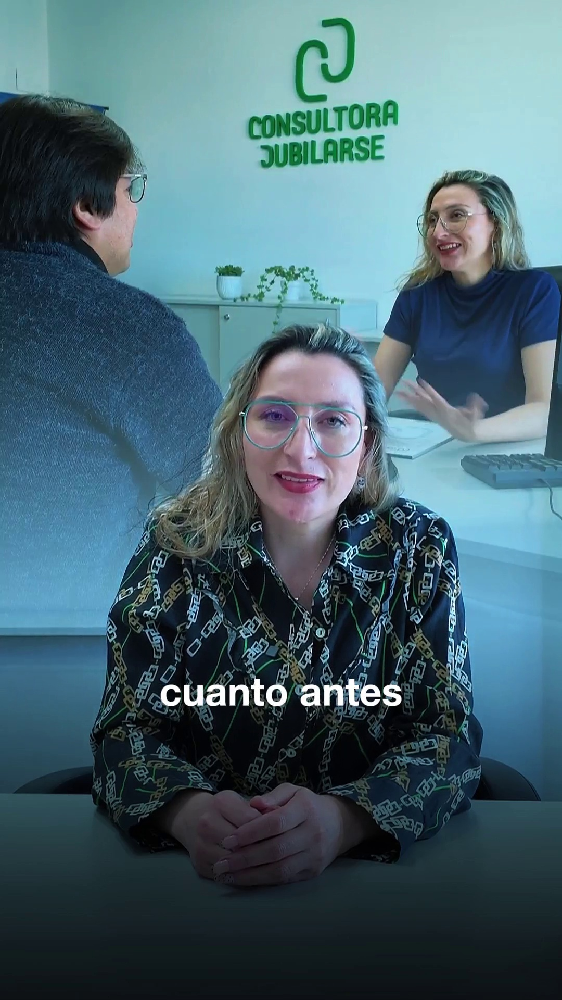
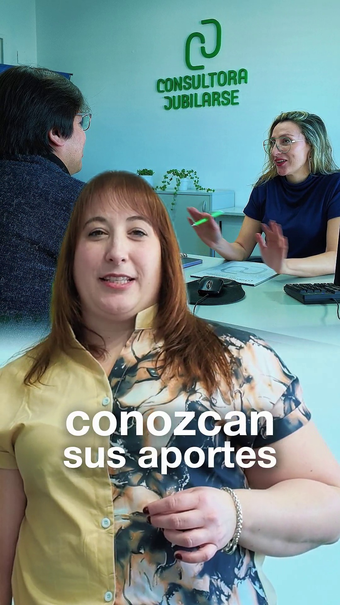

Que te encuentren.
Acercar tus servicios a las personas que los necesitan.
MARKETING DIGITAL
¿Querés que tus redes acompañen mejor los objetivos comerciales de tu empresa?
Partimos de lo que necesita tu negocio para definir qué comunicar, a quién y en qué canales. Combinamos contenido y publicidad paga según los objetivos de cada proyecto.


HISTORIASEL PUNTO DE PARTIDA
Partimos de lo que necesitás mejorar para definir dónde enfocar la comunicación.
Acercar tus servicios a las personas que los necesitan.
Mostrar qué ofrecés y cómo podés ayudar.
Facilitar una consulta, una visita o una compra.
UNA ESTRATEGIA INTEGRAL
Contenido y publicidad paga, con objetivos y canales definidos para tu empresa.
FORMA DE TRABAJO
Un proceso compartido con tu equipo: reuniones online, calendario de contenidos, producción y revisión de resultados.

Nos reunimos por Google Meet para conocer tu empresa, conversar sobre sus necesidades y acordar los objetivos de comunicación.

Armamos con vos un cronograma compartido de temas, formatos y fechas. Coordinamos prioridades y revisamos juntos qué se va a publicar.
Relevamos material fotográfico de forma presencial o recibimos el contenido que nos enviás. Con ese material diseñamos las piezas para redes.
En reuniones online quincenales o mensuales, revisamos el desempeño del contenido y los resultados del mes para acordar los próximos ajustes.
EL EQUIPO
La coordinación conecta las decisiones de negocio con la planificación y la producción de comunicación.

Diseño web y de aplicaciones.

Estrategia y coordinación general del equipo. Planificación, comunicación y producción junto a Hola Agencia.

Relevamiento fotográfico y audiovisual.

Coordinación y seguimiento del trabajo con el cliente.

Diseño de piezas y edición de contenidos.
PRODUCCIONES REALES
Una selección del trabajo en redes. Elegí un cliente y recorré sus placas y reels.
Vista previa de diseño · Selección de nuevas piezas pendiente.
HABLEMOS DE TU EMPRESA
Contame qué está pasando con tus redes, qué consultas recibís y qué te gustaría mejorar. Ese es el punto de partida para definir una propuesta.
Consultar por marketing digital